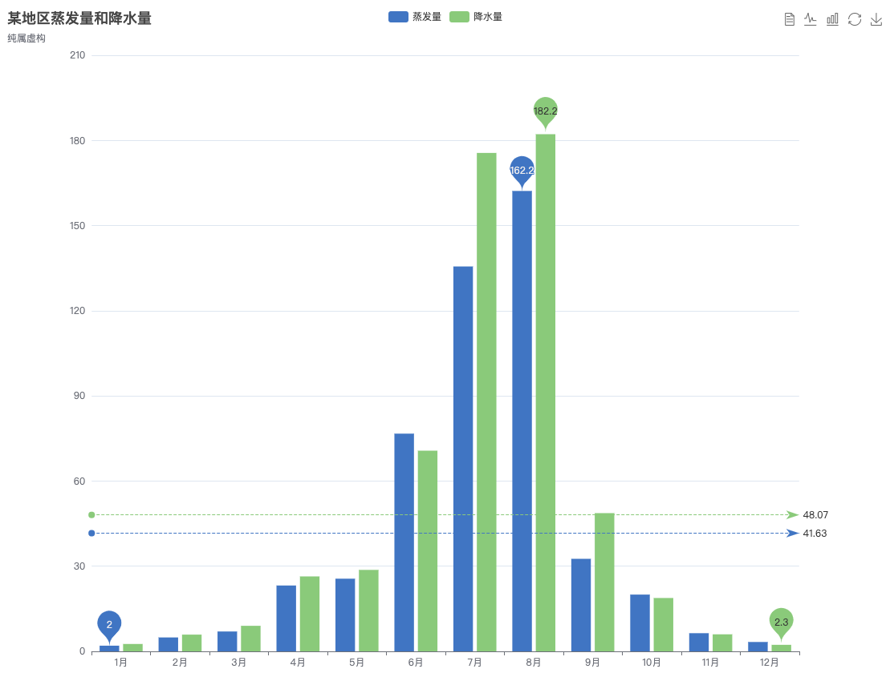
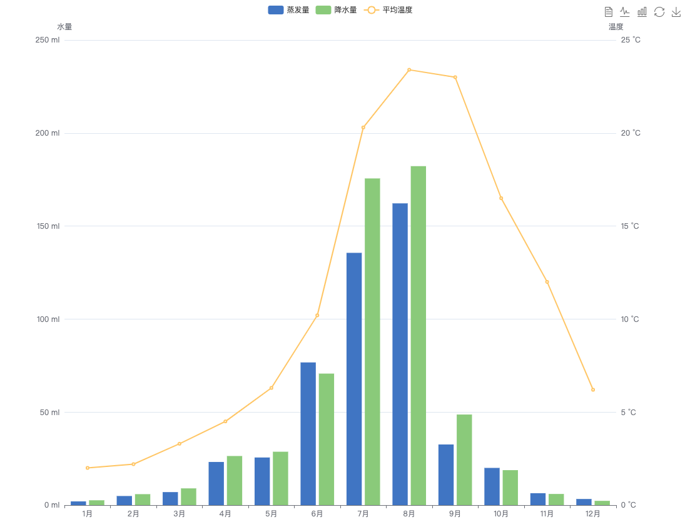

echart 使用笔记
echart 是图表界的扛把子，基本是必备技能，学习并记录。
概述
官网: https://echarts.apache.org/zh/index.html
- 第一步，你可以在示例中得到你想要的图形；
- 第二步，当你需要对图形做定制化的调整时，你会发现太多的配置无从找起，这时要回头看看ECharts 基础概念概览；
- 第三步，你可以一头扎进配置项文档，去寻找你想要的配置项；
- 第四步，
知识点
基础概念
系列(series): 一组数值以及他们映射成的图。
系列的类型(series.type): line(折线图)、bar(柱状图)、pie(饼图)、scatter(散点图)、graph(关系图)、tree(树图)等，更多配置在: https://echarts.apache.org/zh/option.html#series
组件(component)，在系列之上，echarts 中各种内容，被抽象为“组件”。比如legend(图例)、xAxis(直角坐标系 X 轴)、tooltip(提示框组件)、toolbox(工具栏组件)等。
组件的定位，不同的组件有不同的定位方式。多数组件和系列，都能够基于 top / right / down / left / width / height 绝对定位。
grid: {
top: 80,
left: '30%',
bottom: 13
}
图例 legend
图例
{
// 图例在图标中的位置
x: 'center',
y: 'top'
}
对应文档: https://echarts.apache.org/zh/option.html#legend
图例的选中，图例展示
{
// 图例在图标中的位置
x: 'center',
y: 'top',
data: ['name1', 'name2', 'name3'],
selected: {
name1: true,
name3: true
}
}
注意 data 与 selected 中的值需要和 series 中数据的 name 相对应，否则图例不能展示。
柱状图 bar
让柱状图有图例的技巧。基础的柱状图是 x 轴写数字，柱使用同一种颜色。
option = {
xAxis: {
type: 'category',
data: ['Mon', 'Tue', 'Wed', 'Thu', 'Fri', 'Sat', 'Sun']
},
yAxis: {
type: 'value'
},
series: [{
data: [120, 200, 150, 80, 70, 110, 130],
type: 'bar'
}]
};

双柱状图中可以展示多个颜色:

代码参见官方示例: https://echarts.apache.org/examples/zh/editor.html?c=bar1
如果我们想要下面这种怎么办呢？

把多列数据转到一列中就可以:
options = {
// 图例
legend: {
x: 'center',
y: 'top'
},
// x 轴
xAxis: {
type: 'category',
show: true
},
// y 轴
yAxis: {},
dataset: {
dimensions: ['title', '糖网', '青光眼', '黄斑区域病变'],
source: [
{title: '', '糖网': 43.3, '青光眼': 85.8, '黄斑区域病变': 93.7}
]
},
series: [{
type: 'bar',
barMaxWidth: 30
}, {
type: 'bar',
barMaxWidth: 30
}, {
type: 'bar',
barMaxWidth: 30
}],
// 柱状图位置设置
grid: {
top: 90,
bottom: 13
}
}
系列 series
上面的 series 中重复出现了这样的配置:
series: [{
type: 'bar',
barMaxWidth: 30
}, {
type: 'bar',
barMaxWidth: 30
}, {
type: 'bar',
barMaxWidth: 30
}]
这里的数据不仅可以全部是柱状图，还可以是别的形式，比如折线图，官网有这样一个示例:

它的 series 是这样设置的:
series: [
{
name: '蒸发量',
type: 'bar',
data: [2.0, 4.9, 7.0, 23.2, 25.6, 76.7, 135.6, 162.2, 32.6, 20.0, 6.4, 3.3]
},
{
name: '降水量',
type: 'bar',
data: [2.6, 5.9, 9.0, 26.4, 28.7, 70.7, 175.6, 182.2, 48.7, 18.8, 6.0, 2.3]
},
{
name: '平均温度',
type: 'line',
yAxisIndex: 1,
data: [2.0, 2.2, 3.3, 4.5, 6.3, 10.2, 20.3, 23.4, 23.0, 16.5, 12.0, 6.2]
}
]
这里还有一个发现，同样的效果有不同的配置方式，比如上面这个既可以将数据存放在 dataset 中，也可以将数据存放在 series 中。
然后在对比中你会对 echarts 有更深入的理解。
dataset 与 series
官方说: ECharts 4 开始支持了数据集(dataset)组件用于单独的数据集声明，从而数据可以单独管理，被多个组件复用，并且可以自由指定数据到视觉的映射。
具体怎么复用呢？看这里:
series: [{
type: 'pie', radius: 50, center: ['25%', '50%'],
// 这个饼图系列，引用了 index 为 `1` 的 dataset 。也就是，引用了上述
// 2011 年那个 "filter" transform 的结果。
datasetIndex: 1
}, {
type: 'pie', radius: 50, center: ['50%', '50%'],
datasetIndex: 2
}, {
type: 'pie', radius: 50, center: ['75%', '50%'],
datasetIndex: 1
}]
宽高
一般情况下图表会填充满容器，但是当容器隐藏时图标组件获取不到容器的宽高，这时需要指定图表的宽高。
代码片段
柱状图